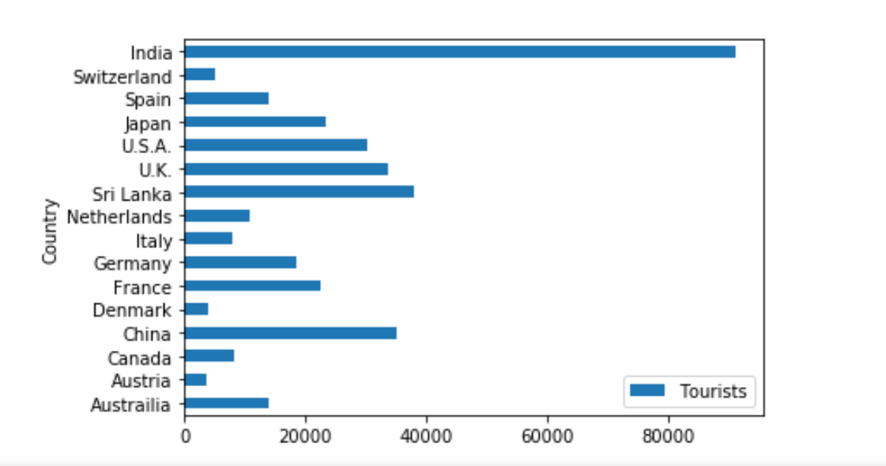
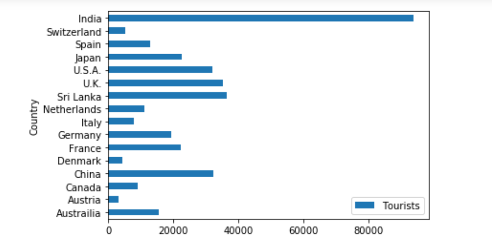
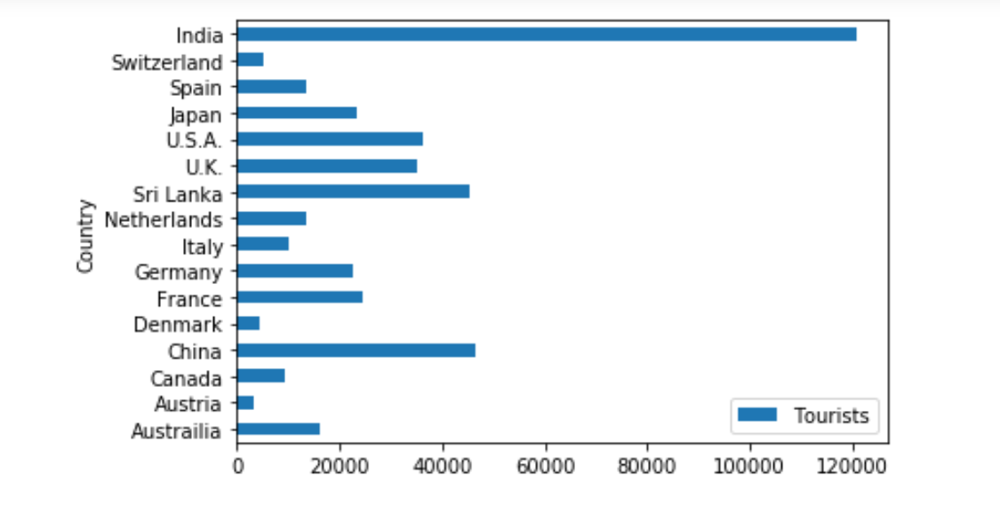
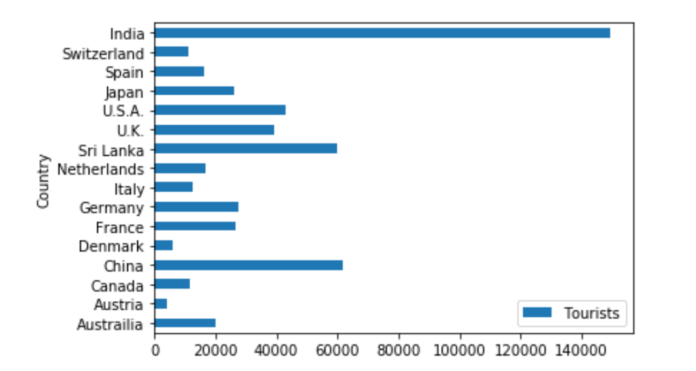
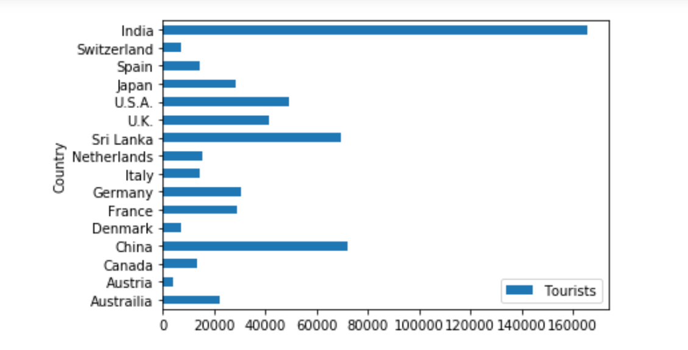
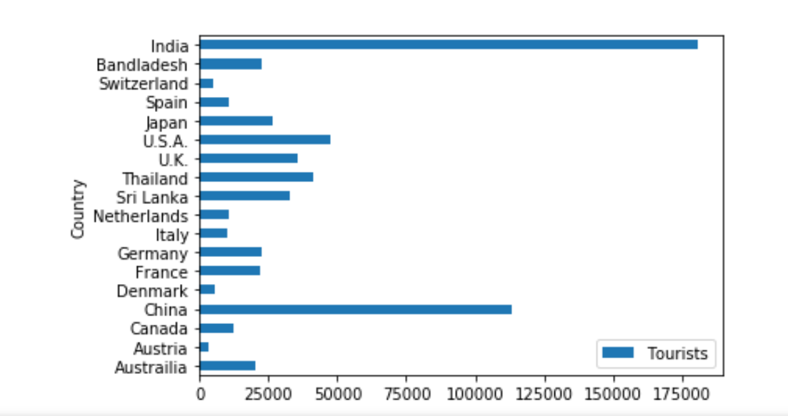
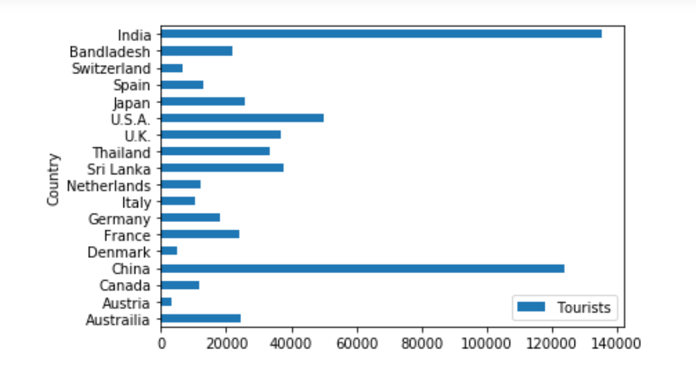
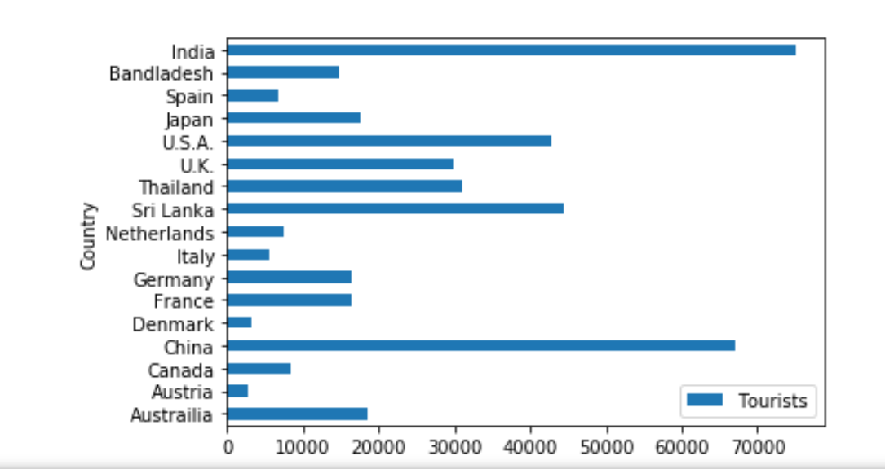
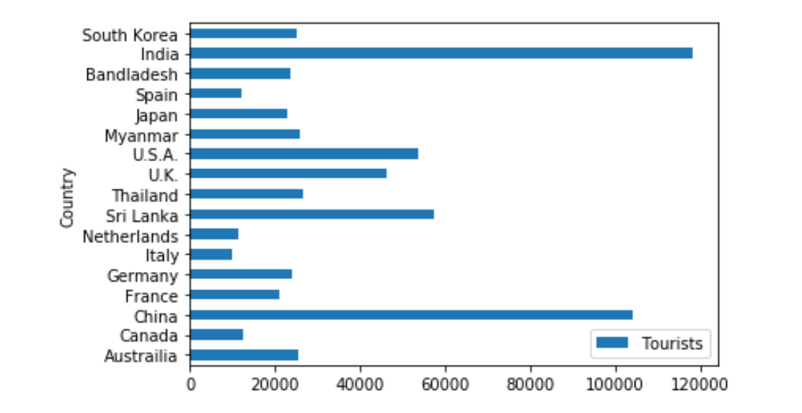
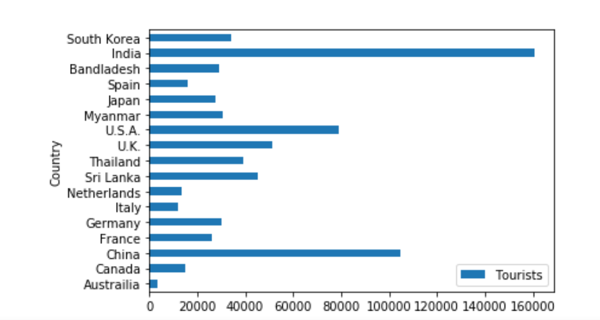

Published October 14, 2019
With visit Nepal 2020 approaching, we can look at how the number of tourists from different countries to Nepal has changed over the years.
Here are 10 datasets outlining the number of tourists who visited Nepal since 2008. Can you find any trends here?
2008
2009
2010
2011
2012
2013
2014
2015
2016
2017
Source: nepalindata.com
China and India have definitely been the top two since 2010, whereas the other countries have fluctuated over time.